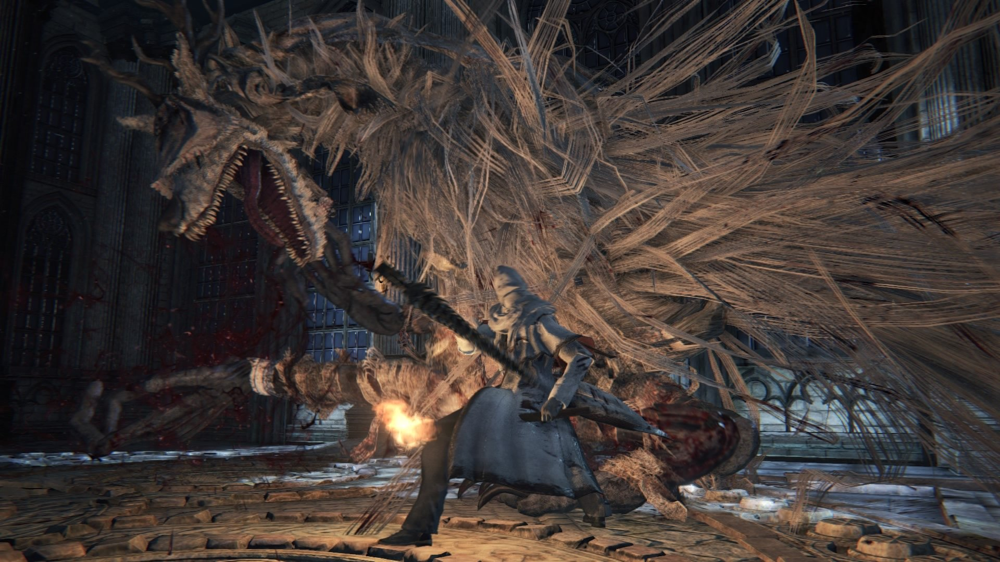

Vicar Amelia |
|||
|---|---|---|---|
 |
|||
 |
 |
Location | Drops |
| 5367 | 15000 | Cathedral Ward | Gold Pendant |
| Defenses | |||
 |
 |
 |
-- |
| 113 | 135 | 113 | -- |
 |
 |
 |
 |
| 113 | 160 | 55 | 160 |
 |
 |
 |
 |
| 999 | 999 | Yes | No |
Vicar Amelia (教区長エミーリア Kyōku-chō Emīria lit. "Vicar Amelia/Emilia") is a Boss in Bloodborne.
Dialogue
"Remain wary of the frailty of men. Their wills are weak, minds young."
"Were it not for fear, death would go unlamented."
"Seek the old blood."
"Let us pray, let us wish... to partake in communion."
"Let us partake in communion... and feast upon the old blood."
"Our thirst for blood satiates us, soothes our fears."
"Seek the old blood."
"But beware the frailty of men. Their wills are weak, minds young."
"The foul beasts will dangle nectar and lure the meek into the depths."
"Remain wary of the frailty of men..."
Vicar Amelia Information
- This boss is not optional.
- After defeating Vicar Amelia and interacting with the altar, the world state advances and turns to night time. At night, some enemies become stronger, while others fall asleep and won't react until the player approaches them.
Location
- In Cathedral Ward, past the big circular graveyard, up the stairs, inside the Grand Cathedral.
Lore
- Vicars were the heads of the Healing Church, as is revealed in the item description for the Gold Pendant, which she can be seen clutching in the cutscene, and even in battle after her grotesque transformation. This would make her the last Vicar, who oversaw the Church as Yharnam fell to the beasthood brought upon it by misuse of the Old Blood. As the player finds her, she is seen praying to the altar in the Grand Cathedral which hold a misshapen skull, presumably that of Laurence, the founder of the Healing Church. Here she kneels awaiting her inevitable transformation, praying, clasping her pendant which existed to carry a reminder that had been all but forgotten, and that may have prevented the madness that led Yharnam to ruin before her eyes: Fear the Old Blood.
Drops
- Blood Echoes NG (15,000), NG+ (103,425), NG++ (113,768), NG+3 (129,282), NG+4 (155,138), NG+6 and so on (258,563)
- Co-op Echoes: NG (7,500)
- Gold Pendant
- Gain 1 Insight for finding the boss and 3 Insight for killing it.
How to summon other participants for the fight (Cathedral Ward)
When the player first encounters this boss they may find themselves unable to summon other players nor the NPC summon in Cathedral Ward. In order to fix this you will need to open a certain gate in Cathedral Ward, completing this task will activate the ability to summon players and the NPC for the Cathedral Ward area. You can reach the gate via 3 different routes:
- This requires the Hunter Chief Emblem item purchased from the Fountain in Hunter's Rest for 10,000 Blood Echoes. Upon arriving in Cathedral Ward, take the Left exit and then the Right path past 2 enemies that use walking sticks as weapons. This will lead you to a big set of stairs and a Giant enemy, take the stairs upwards and use the Hunter Chief Emblem on the closed gate. This is the quickest way to open the gate and unlock the ability to summon people.
- Assuming you've already unlocked the shortest route to this Boss from the Cathedral Warden Lantern, take the exit directly ahead of you when you arrive at Cathedral Ward and then go up the big stair case to your right. Once you're past the gate at the top take a Left and follow the low path to a Lever near the bottom of another big stair case, the Lever opens a gate to the big round Central Plaza area (2 giant enemies patrolling it). If you run across this area to the opposite side you'll reach the required gate with a Lever nearby to open it.
- Assuming you've already unlocked the shortest route to this Boss from the Cathedral Warden Lantern, take the exit directly ahead of you when you arrive at Cathedral Ward and then go up the big stair case to your right. Once you're past the gate at the top take a Left and travel straight past the big stair case (Central Plaza should be on your left and the big stair case on your right), there should be a Dog enemy here. Near the Dog enemy is a Ladder, climb it, climb another ladder then descend a 3rd ladder to circle around the perimeter of the Central Plaza area to reach the gate & lever.
Combat Information
- This fight has 2 phases:
- Phase 1: 100% HP - Normal move set
- Phase 2: 50% HP - In addition to the normal move set, she receives a healing ability, a few new combos, and becomes more aggressive with attacks.
- Weak to Fire Damage.
- Strong against Blunt, Arcane and Bolt damage.
- Can be staggered and possible to perform a Visceral Attack on her (when her head is down and the "parry" sound plays) during all phases. The main trigger for this appears to be heavily damaging her legs.
- She has a wide variety of attacks, covering her sides, close range, and long range, so there is no "safe" zone and requires lots of dodging or distance.
- It is not recommended to stay behind Vicar Amelia, as her tail completely obstructs your view.
- After each of her attacks, there is an opening for one or two attacks, so it is key to stay close and dodge in to get close to exploit these openings.
- The Threaded Cane seems to be helpful for this fight in its whip form as the attack path goes higher and ends up hitting her in the head. Its possible to chain attacks on her after multiple head strikes and stuns.
- Since this boss heals in Phase 2, it is recommended to bring Numbing Mist with you to stop her from healing. The effect only lasts 30 seconds so reapply as needed.
- Old Hunter Henriet can be summoned for this fight and makes it considerably easier. Although Henriet doesn't do that much damage, Amelia will tend to focus on her instead of you, allowing you to spend more time attacking instead of dodging.
Weak Spots
- Both legs. Attacking one many times or both moderately will make her drop on her knees, allowing for a Visceral Attack.
- Left arm. Attacking her left arm will periodically stagger her. When staggered she lowers her head, which can then be hit.
- Right arm. If the left arm is sufficiently damaged, attacking the right arm can also result in a (shorter) stagger.
- Head. Her head is her factual weak point. It is the only body part that can be attacked critically (similar to the Cleric Beast). It also takes the most damage, if you're able to hit it (when staggered, mostly). If hit enough times she will cover her head with both hands/claws, leaving her open for quite a while. (try ambushing behind)
| Attack Name | Attack Description | Counter |
|---|---|---|
| Right Claw | Claws the ground with her right arm. | Dodge right and attack. |
| Right Swing | A close range swing with her right arm. | Dodge right and attack. |
| Right Swing and Claw | A close range swing with her right arm then claws the ground once with her right arm. | Dodge right and attack. |
| Right Swing and Backhand | A close range swing with her right arm and a backhand swing. | Dodge right and attack. |
| Left Ground Pound | Pounds the ground in front of her with her left hand. | Dodge left and attack. |
| Triple Right Ground Pound | Slams the ground in front of her three times with her right arm. | Dodge to her side and attack. |
| Bite | If the player is close in front, Vicar Amelia will quickly bite the player. | Don't stand in front of her. |
| Grab | Raises both arms high in the air for a moment, then grabs, bites, and throws you away. (If she is injured, she will use one arm) | Dodge to the side and attack. |
| Howl | The boss will arch her back and howl and glow gold for a moment, restoring her to full capability. | Gives you time to attack her once or twice. |
| Ground Blast | She will rise up, bring her hands together, then slam her hands to the ground, causing a linear medium-range AOE. Medium recovery animation. | Lock onto Vicar Amelia, and when she reaches peak height, dodge to the upper left/right and attack. |
| Pounce | Usually done when she runs on all fours. She will leap into the air and try to hit you with her right claw. | Easily avoided by dodging to your left as she descends, and leaves her open to a hit or two. |
| Pincer | With arms wide open, she sweeps with both arms in front of her. | Dodge to the side and attack. |
| Turning Left Backhand | When the player is on her left, she will perform a turning left backhand. | Dodge left and attack |
| Turning Right Backhand | When the player is on her right, she will perform a turning right backhand. | Dodge right and attack |
| Retreating Left Backhand | She raises her left arm across her body and backhands to her left side as she steps back away. | If you are close, dodge to the side and attack. |
| Wide Right Sweep | She sweeps to the left with her right arm. | Dodge right and attack. |
| Wide Right Sweep and Backhand | She sweeps to the left with her right arm, pauses, then backhand sweeps to the right. | Dodge right and attack |
| Wide Left Sweep and Double Right Claw | Vicar Amelia sweeps with her left arm, then claws the ground twice with her right. | Dodge right and attack |
| Phase II | Attack Description | Counter |
| Ultimate Combo | Quickly slams the ground four times, wide right sweep, right backhand, then a long range right sweep. | If you are close, dodge to her side and attack. If you are far, move back and don't get hit by the long range sweep. |
| Heal | A channeling heal signaled when she joins both hands on the chest and emits a light. If you are too far, she will actually jump back and use this move. | You can interrupt this by attacking her repeatedly. (Varies by weapon) |
| Wide Left Sweep and Double Right Claw Pound | Vicar Amelia sweeps with her left arm, then claws the ground twice with her right and ending with a left ground pound. | Dodge right and attack. |
Strategy 1 (No Numbing Mist Needed)
You'll need some Bone Marrow Ash, Fire Paper, Molotovs, and as many Quicksilver Bullets. You will be using the Threaded Cane Whip and Repeating Pistol as weapons. The strategy for this is basically to learn her moves first so go through the fight a couple times and know what her tells are and how to time your dodges. (you can see what happens when it's off)
- You want to save your Bone Marrow Ash for when she is going to heal if you run out that's what the Molotovs will help with.
- Use your Fire Paper with the whip and bring her health down and when she starts to heal use your Bone Marrow Ash with the Repeating Pistol to stagger her out of it. (if this doesn't work you may need to upgrade the pistol)
- If you run out of Bone Marrow Ash use your Molotovs or run in and wail away with the fire whip. (a normal whip won't do enough damage)
Strategy 2 (Go for the legs)
Get yourself the Saw Cleaver from the messengers or the Saw Spear from one of the hanging corpses in Central Yharnam. These weapons both have a hidden "serration" damage property that boosts their power against beasts. Bait out one of her swiping attacks, then dodge through it so that you're in place for a shot at her legs. Try to get 2 or 3 fast hits in, or just a single R2, then dodge away before she tries to backhand you. Repeat this process until her legs give out and she's on her knees. This is a signal that you can do a Visceral attack, so quick step yourself in front of her and rip her brains out. Repeat until dead.
If she's not giving you many opportunities to hit her legs, go for one of her arms first in order to stagger her. When she slowly raises one or both fists above her head, get ready to dodge the incoming shock wave. She will be open for a moment after using this attack, so use it to hit her arms for a potential stagger, which will open up her legs for punishment. If she jumps at you, try dodging towards her and to the side to get closer to her legs when she lands.
Fire Paper or Molotov Cocktails combined with Oil Urns can make this fight go by a bit faster.
Also bring Numbing Mist, and wait for the pause in between her attacks to throw it without getting countered. Apply the mist again every half minute or so to preemptively stop her from healing. Even if she is under the effects of the mist, she will still try (and fail) to heal if she has some distance from you, so use that as a cue to get in some more damage.
Video
((Please respect these video posting guidelines))
Gallery

Notes & Trivia
- Her healing ability can be cancelled and blocked by Numbing Mist. This item can be found early in the game by climbing the ladder behind the gate where the Wooden Shield is found, or by sending the Lonely Old Woman to Iosefka's Clinic, then speaking with Iosefka.
- Her fight arena can be reached without using the Hunter Chief Emblem. This is done by killing the Blood-Starved Beast, which triggers the unlocking of the door in Oedon Chapel that leads to the Healing Church Workshop. This area can be traversed to get behind the gate that would normally be opened by the emblem.
- After defeating her and interacting with the altar, it will be night time.
- Her dialogues can be heard before triggering the fight if the player stands at the top of the stairs and listens closely.
- Vicar Amelia shares her boss theme with the Cleric Beast, presumably because both Amelia and the Cleric Beast were once members of clergy and got turned into beasts.
- Fog gate glitch: If host engages cutscene without both players(summons) in the world, it wont allow the last player through.
- Interestingly enough, Vicar Amelia also makes a re-appearance in the Old Hunter's DLC as a Church Hunter. She is wearing the white garbed Church hunter by the Surgery Alter after you defeat Ludwig the Accursed, while also chanting the same chant when you first encounter her in the Grand Cathedral. Be careful when you approach her, as another Church Hunter is hiding and waiting to ambush.
 Anonymous
Anonymous
- Anonymous
- Anonymous
- Anonymous
- Anonymous
- Anonymous
Listen guys… I’m not a furry… But some exceptions can be made…
- Anonymous
Very poetic Laurence, the First Vicar, is fought in the nightmare version of this same cathedral
- Anonymous
Aah, you were at my side, all along.
My true mentor...
My guiding fire paper..
- Anonymous
- Anonymous
- Anonymous
I can safely say this is one of the sexiest characters ever created.
- Anonymous
i'll fully admit im a furry and am saddened that i got her in my first go. i wish i could spend more time with her
- Anonymous
There is no evidence that the church hunter in the Hunter's Nightmare is Amelia. Someone's been watching too much youtube.
- Anonymous
This entire section is just people complaining about how boring Amelia is... or just people in the closet about being a furry.
- Anonymous
I wish she can sit on my face and fart all over it in beast form.
- Anonymous
I am not a furry, but I freakijn love Amelia soo much. Like if I were in the hunter dream, I would love to live eternity with her forever without a second thought. I wish she can eat me with the death blow of the bite grab so that I can live the rest of my life inside of her. <3
- Anonymous
This boss is one of the worst bosses that I have ever fought in a video game because not only does she have a healing mechanic (which I consider to be the worst mechanic that you can give to a BOSS), but said healing mechanic is both strong and stupidly hard to interrupt more often than not, rendering so much of your progress in this fight useless. And Vicar Amelia is a tough enough boss as is with erratic combos coupled with a stupidly large health pool, to the point where it even feels like the hunter axe with a good strength build does nothing more than chip damage in the same way that a threaded cane with a full on skill build does chip damage to regular enemies. This is the one boss in the game that I truly hate with every fiber of my being, which is unfortunate since I HAVE to beat this boss in order to explore the rest of Yharnam, isn't that GREAT!?! ***k this boss fight.
- Anonymous
- Anonymous
The dialogue recycles at let us partake in communion.
Also I'm sure it's feeds our fears not soothes our fears,
And again unlamented or unrelented ?
- Anonymous
I have just realised how much I've ****ed my progression in the game (spoilers if you wanna go blind like me). I took the left turn on Cathedral Ward, ended up in old yharnam, killed blood starved beast, explored the first two dungeons and went to hypogean gaol, I had a +6 saw spear and 26 skill before I even met her.
- Anonymous
Flamesprayer trivializes this fight. I didn't even use a trick weapon just roasted her the whole fight. had +4 flamesprayer with 13 arcane, the formless oedon rune (which gives you 4 extra bullets) popped a bone marrow ash right before the fight, and did the trade health for 5 extra bullets mechanic. roasted her from start to finish and used I think 28 bullets worth
- Anonymous
- Anonymous
This boss is kind of beautiful, and I mean that in an appreciative way (keep it in your pants, people). The short story we get for her, coupled with her immediate transformation into a beast that still clutches her precious golden amulet, is intriguing. Was she staving off beasthood with her last thread of willpower, only to fail right as we walk through the door? Also, her beast form is downright gorgeous in the atmosphere; the long flowing white hair in the moonlight makes my skin crawl, and when she turns her head to snarl at us, I get actual chills. The first time I saw the cutscene, I was just in awe. They did a great job of setting her up with the thirty seconds you get with her before the fight.
Shame she gets stunlocked so easily, though.
- Anonymous
Man, I'm kinda sad. In NG I fought her with Henriett so she was pretty easy. Then, when I go to fight her in NG+ on my own, I absolutely cream her with a +10 threaded cane and realize how overleveled I was at 115.
- Anonymous
- Anonymous
- Anonymous
You have to be really aggressive. Stick close and just keep slashing with L1 Saw Cleaver. She will get stunned over and over if you don't relent. Know when to move to the side or behind her, though.
- Anonymous
Mid range is the worst place to fight her. Her tracking isn't great so playing up close is pretty easy, obviously you just have to be conscientious of her spin and dodge into it. She's very charitable with how slow she is to punish you at long range with her jump (and even that has a delay) so if you're overwhelmed or need to buff/heal you can just spam dash back and recover with impunity.
- Anonymous
“It is not recommended to stay behind Vicar Amelia, as her tail completely obstructs your view.”
*R2 spam has entered the chat*
- Anonymous
+3 transformed ludwigs holy Blade, 25 Str 18 Skill, fire paper, charged t2 = perma stagger easy boss
- Anonymous
I'm gonna say 1 thing: L1 transformed attacks of the Saw Cleaver. So op
- Anonymous
This boss probably the hardest ever I have seen in my life. I try to defeat her for one month. I mean that not at bad all. Well, you have to defeat her before you go for which of Henwick. Which of Henwick sooo easiest boss ever I have met. Also sorry I did not defeat one reborn after I kill victor Amelia.
- Anonymous
- Anonymous
Flamesprayer plus saw cleaver (+5) plus fire paper equals Vicar Amelia dead in under a minute. I dont think i even got to see her heal. 20str//20skl//20arc. First playthrough too! but i be playing these games since dark souls in 2011. i think i got gud
- Anonymous
- Anonymous
- Anonymous
If you did the skip to forbidden woods and then you interact with eileen before triggering the blood moon, she will appear with vicar amelia and will be aggroed when the boss fight starts. Just in case you want an ornstein & smough comeback.
amelia can hurt eileen, but she won't target the boss.
- Anonymous
I know she is one of the weakest bosses but i have more problems with her that any other boss
- Anonymous
I found that the camera doesn't behave very well in this fight, so i decided to fight her the way I've always fought large monsters in Dark Souls: using the camera manually instead of locking on and trying to get close to her from the sides and behind (her 8 o'clock). The roll was way more effective than the dash, at least in my opinion and you get tons of chances to deal damage safely. It was a relatively easy fight that way. Just be careful of the hadouken she does right after the praying position slam if you end up in front of her somehow.
- Anonymous
How has no one noticed she is screaming "Immigrant Song" by Led Zepplin, yet?
- Anonymous
- Anonymous
If she gives you trouble, take the time to do the optional areas nearby, they have more than enough loot to get you a +6 weapon or BMA if you need it. Pthumeru chalice can net you some decent fire gems early on if you're ARC. Either way, she'll be awfully squishy at +6
- Anonymous
Can kill you in a few seconds, but if you're careful it won't happen. If you hit her with strong attacks or heavy weapons she gets stunned quite a lot.
- Anonymous
Stupidly easy boss fight. Used fire paper on saw spear and hit her right arm constantly. She puts her head down and go for the viceral. Literally beat her in less than a minute
- Anonymous
In my first run I killed her in the first try and thought I was lucky, but boy in NG+ I just spam R1 with fire Tonitrus to death. If you keep hitting her right in front of her she misses the attack and you can recover your stammina safe. Easiest boss.
- Anonymous
- Anonymous
I really like this fight but as long as you stick close to her back it's best to just wail on her, especially with fire paper. She isn't very quick so it's easy to get a lot of damage in without taking any. I beat her on my first try today, she deserved her own track instead of the cleric beast theme
- Anonymous
It's too easy to break bloodborne and become op. Did nearly everything I could before getting to this fight. BL51 with +6 saw spear made this not even really a fight. Especially coming from the watchdog of the overlords.
- Anonymous
- Anonymous
This boss was so easy the first time I beat her she let me get fully charged heavy attacks which just stagger and destroy her
- Anonymous
- Anonymous
Having a +6 or higher stake driver with good scaling and gems makes the fights super easy. Just switch to the thrust mode, run behind her, and charge up the exploding R2 attack, it will to a ton of damage, and if you hit her leg you can lead into a visceral after she drops.
- Anonymous
Literally the easiest boss if you have high dps. Get behind her even if you can't really see anything, she turns around really slow you can do a full charge attack with ludwig blade transformed mode or hunter axe and she will stagger, attack with transformed ludwig can stagger her easily and be aggressive she's the most easiest beast boss to dodge.
- Anonymous
Wait.. how is she already covered in bandages right after transforming? What was under her human clothes
- Anonymous
- Anonymous
Stock up those cursed fire gems for NG+, this bih has a massive healthbar and will occasionally just piss off to the corner to chug her holy estus. When that happens, just chase and try to cripple an arm or leg while she sits still
- Anonymous
She used attacks that weren’t in the list on me, killed me twice.
- Anonymous
Even in beast-form, she appears to be kneeling and praying (or making sounds that sound like attempts to speak?) in front of the altar before you re-enter the room, which I thought was pretty neat. Figured this by bold hunter's marking my way out after initiating the fight (in hunt for Gehrman's dialogue).
- Anonymous
- Anonymous
- Anonymous
This boss is even easier with flamethrower than blood starved beast. Make sure to have full 20 bullets and +5 pre-fight to avoid running out of ammo during heal and just burn her down
- Anonymous
Bowblade in NG+... so many bosses are basically hard-countered by it... sheesh.
- Anonymous
Went straight from father gascione, level 20, saw cleaver +2, and fire paper. Took 2 tries.
- Anonymous
Didn't see the guide, and hoooo boy did I yell when she started to heal. I had her down to about 10% before she got a heal in, too...
managed to slaughter this boss at level 24 on another character, considering she's actually pretty easy. if uh, anyone's having any issues with her, add me: sxrrealism.
- Anonymous
shes a DPS check, at 30% go all in, interrupt her heal, playing too careful is no good in this fight, will drag out the fight way too long. its not BS, its a DPS check, get gud.
- Anonymous
***** this boss. Everytime she gets t about 30% HP she just heals half her health and the only way to stop her is either to get lucky and break her arms when she does it use a numbing mist, which, I just want to say, are limited, so if you keep dying after using them then you'll run out. She also seems to have unlimited heals, overall making for a genuinely***** fight.
- Anonymous
Y'all can keep your waifus. I got Amelia and she ain't afraid to scream in my ear.
- Anonymous
- Anonymous
You can also cancel her healing by stunning her (by making her arms take significant damage). I doubt I would have beaten her if I hadn't stunned her when she started healing.
- Anonymous
I read this after beating her and even though her tail makes it impossible to see, you are out of the way of her attacks when you are behind her. Just keep listening for when she screams or when her tail moves because it means she is about to attack and you need to dodge. Plus, the back allows you to go for the legs and stagger her very easily... ended up getting 5 viscerals in a row this way
- Anonymous
This boss is bull*****especially so early on and the fact you only have 6 numbing mist and I used all of them, unless there is a way o can get more early on I don't think I'm gonna be able to play that character anymore
- Anonymous
Remain wary of the frailty of men. Their wills are weak, minds young
- Anonymous
- Anonymous
I've tried to get a summon for this but that bro stuck in lower area and refused to come to the boss. do I need to meet some requirements for the summon to come to the boss fog?
- Anonymous
For anyone having trouble, doesn’t really matter what level you are, you should be around lvl 30 anyway, but, three simple steps: 1. Saw Cleaver 2. Fire Paper 3. Dodge Left and Punish
- Anonymous
Kill blood starved beast first..... stupid wiki doesn't mention that if you kill Amelia first, the summon sign for Alfred vanishes for BSB. You kill Amelia first, theres no help for bsb if needed (offline at least, which some are forced to do without PS Plus).
I assume URL's need to be verified by staff before being allowed on the page? The Youtube URL keeps getting filtered out of my changes :/
- Anonymous
- Anonymous
No mention of where the NPC summon is? Also my Small Resonant Bell can't be rung anywhere in the areas leading up to the boss fight (I've already triggered the cutscene).
- Anonymous
Could it be that this "slugbaby thing" watching down from above was triggering her mutation? They seem to hugely increase beasthood with their powers.
- Anonymous
There's a comment about her reappearing in the Hunters Nightmare, but the two are voiced by two different voice actors. While it's a nice theory, it's far from confirmed that the white church Hunter is Amelia.
- Anonymous
on new game i first tried this boss. new game +1 though i cant seem to beat her. i usually run out of blood vials because of how long it takes to get her huge health bar down
- Anonymous
fun fact: Amelia's cinematic human model is a re-textured Chime Maiden, as confirmed by Sanadsk on his youtube channel. If you look at the models of her and the Chime Maiden, you would notice some similarities.
- Anonymous
During my fight with her, I noticed she would occasionally glow blue in-between attacks, but I can't seem to find any information on what that's all about. This was similar in appearance to the gold glow, but definitely distinct.
- Anonymous
“Amelia is likely the last vicar.” For now, yes, but vicars are chosen by the congregation, not by blood or matriarchy. I have a feeling a lot of vicars have passed through the Healing Church, and probably all met similar fates.
- Anonymous
Vicar Amelia is the beast at the end of the Face Your Fears trailer. You can tell that statue is the one you find her praying at, and if you look closely, you can spot almost all of her face just as she rises up behind the hunter.
- Anonymous
I think her beast form is adorable. It's like a demon deer-puppy, I'd love to have one as a pet.
- Anonymous
- Anonymous
- Anonymous
I can’t light the lamp I’ve tried everything. Going to hunters dream and back and closing the application and reopening it nothings working
- Anonymous
My Vicar Amelia fight - https://www.youtube.com/watch?v=h6FRmpm9RrI
- Anonymous
My Vicar Amelia fight: https://www.youtube.com/watch?v=h6FRmpm9RrI
i always thought it was "Their wills are weak, mine's young" not "minds young" lol
- Anonymous
+5 Ludwig holy blade 2 handed f2f charge spam kills her in like a minute. I got like 3 visceral attacks like that and the right was over. may the good blood guide your way.
- Anonymous
I DESTROYED her in like thirty seconds by throwing an oil urn at her then charge attacking her to death. I think she went down in like 4 r2s with +5 Hunter axe and fire paper. Level 31.
- Anonymous


{kind=link}
{kind=link}
{kind=link}
{kind=link}
{kind=link}
{kind=link}
{kind=link}
{kind=link}
{kind=link}
{kind=link}
{kind=link}
{kind=link}
{kind=link}
{kind=link}
{kind=link}
AAAAAAAA. REEEEEEE OOoOOO
0
+10
-1